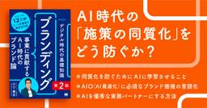
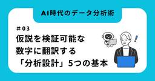
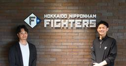

MarkeZine:新着一覧
https://markezine.jp/
翔泳社が運営するマーケター向け専門メディア。MarkeZineはデジタルを中心とした広告・マーケティングに関する情報を多角的な視点で毎日提供します。
フィード
【TikTok Ad Awards 2026】グランプリは日清食品！成果を生むマーケターの覚悟 1
1
MarkeZine:新着一覧
TikTok for Businessは2026年9月29日、広告主向けイベント「TikTok Marketing Summit 2026」にて「TikTok Ad Awards 2026 Japan」の贈賞式を開催した。本稿では、延べ31のノミネートから選出された全5部門とグランプリの受賞作品をレポートする。審査員らのトークセッションから見えた「フルファネル戦略」や「クリエイター共創」の最前線など、今後の出稿に向けたヒントをお届けする。
2日前

AIによる「施策の同質化」をどう防ぐべきか──自社ブランドの思想を武器にする方法【書籍抜粋】
MarkeZine:新着一覧
マーケティング実務において生成AIの活用が定着する中、大きな課題となっているのが「施策の同質化」です。AIが過去の成功事例や市場で評価されやすい表現を学習・最適化する結果、競合と似通ったアウトプットが量産されやすくなるからです。AIの恩恵を受けつつ自社ブランドを際立たせるには、AI任せにするのではなく、自社ならではのブランド価値や思想の言語化が不可欠です。今回は書籍『デジタル時代の基礎知識『ブランディング』第2版』（翔泳社）から、AI時代に適応するブランド戦略について解説します。
2日前
顧客は黙り、従業員は去る──マッチングアプリ「with」が挑むカスハラ問題 鍵はAIエージェント
MarkeZine:新着一覧
2026年10月1日より、カスタマーハラスメント（以下、カスハラ）対策が義務化される。人材確保が年々難しくなる中、多くの企業にとって“守り”の体制づくりは最優先事項ともいえるだろう。そこで、期待が寄せられているのがAIである。一部の顧客対応をAIが担うことでカスハラの抑止力に。それと同時に、記録・事実確認の作業負担を軽減する。しかし、その一方で対策が進むからこその“副作用”も生まれているという。この課題に真正面から向き合っているのが、マッチングアプリ「with」を展開する株式会社withだ。同社のAI活用を支える株式会社Channel Corporationとともに、守りと攻めを両立する次世代のコンタクトセンターのあり方を聞いた。
3日前

分析の前に一度立ち止まる勇気を。仮説を検証可能な数字に翻訳する「分析設計」5つの基本とAIの使い所
MarkeZine:新着一覧
仮説を構築できたら、早速データを見たくなります。しかし、仮説のままではデータを確かめられません。「何のデータを」「どう集めて」「どう分析するか」を描く分析設計のフェーズが必要です。本稿では「来店間隔が延びた優良顧客は、競合にスイッチしているのではないか？」という仮説を例に、マクロミルグループでマーケティング戦略支援を行うエイトハンドレッドのデータアナリスト上田拓朗氏が、分析設計の方法とAIの効率的かつ有用な使い方について解説します。
3日前

野球を見ない人でもつい買ってしまう？ファイターズに学ぶ「脱・応援グッズ」MD戦略
MarkeZine:新着一覧
北海道日本ハムファイターズの本拠地であるエスコンフィールドHOKKAIDOには、試合がない日も多くの人が訪れ、お土産やライフスタイル雑貨が売上を牽引するなど、応援グッズのみの売上に頼らないグッズ展開が行われている。本記事では、ファナティクス・ジャパンとの協業による「脱・応援グッズ」のマーチャンダイジング（MD）戦略や、在庫リスクを抑えるEC連携、世界観を重視したコラボ選定の裏側に迫り、野球ファン以外も魅了する、リアルとデジタルを融合させた新たなコマースの形を紐解く。
3日前
「AIで工数削減」の結果、顧客が離れる？ コンタクトセンター・CX変革の“本丸”は効率化の先に
MarkeZine:新着一覧
「AI時代」といわれはじめて、すでに数年が経つ。もはや、業務効率化だけにフォーカスしている場合ではない。そう指摘するのは、コンタクトセンターを起点に企業のCX変革を支援するフライルのCEO 財部優一氏だ。今、コールセンターやカスタマーサポートをはじめ、コンタクトセンターへのAI実装の機運が特に高まっている。だが、多くの企業は変革の“順番”を誤っているという。すると、AIを導入しても機能せず、顧客満足度の低下やメンテナンス工数の増大を引き起こす。結果的に、プロジェクト自体が頓挫するケースも珍しくない。では、何が正しいステップなのだろうか。
4日前
富士急行、創立100周年の挑戦。組織横断で「社員の想い」を起点とした大規模プロジェクト実現までの軌跡
MarkeZine:新着一覧
2026年9月に創立100周年を迎えた、観光・レジャー・交通をはじめ幅広い事業を手掛ける富士急行。地域密着で富士山麓の発展に貢献してきた同社および富士急グループは、100周年記念企画でそのブランド価値を伝えるため、企業のブランドマーケティング支援を手掛けるエフアイシーシー（以下、FICC）とタッグを組んだ。大規模な社内・グループ横断プロジェクトとして、いかに様々なステークホルダーを巻き込みながら各種アイデアを具体施策として実現させたのか。本記事では、富士急行の堀内氏と斎藤氏、FICCの森氏と田崎氏に、プロジェクトの全貌について聞いた。
4日前
「CPMは安いほど良い」は本当？ メルカリ石渡氏が説く原理原則とAI時代にマーケターが集中すべきこと
MarkeZine:新着一覧
AIネイティブ時代、アプリや事業のマーケターは何と向き合っていくべきなのだろうか。2026年7月に開催された「Adjust Ignite Tokyo 2026」では、メルカリのAI Marketing Leadを務める石渡 貴大氏と、AdjustのSales Leadである高橋 将平氏が対談。デジタル広告の原理原則を紐解いた上で、人間が「本当にすべきこと」を指し示した。
4日前
AI経由リードの商談化率3倍！HubSpotが実践したAEOの4ステップ
MarkeZine:新着一覧
生成AIの普及によって、顧客の購買行動は静かに、しかし確実に変わりつつある。検索エンジンではなく生成AIに情報を尋ね、比較検討まで済ませたうえで売り手に接触する買い手が増えている。この変化に対応する取り組みは「AEO（Answer Engine Optimization）」と呼ばれ、自社が生成AIにどう語られているかを可視化し、改善していくことを指す。MarkeZine Day 2026 Autumnのセッションに登壇したのは、自社サイトのトラフィックが一時80％減という危機に直面したHubSpot Japan。そこからどうAEOに取り組み、成果につなげてきたのか、同社 日本事業マーケティング責任者の土井 早春氏が実践に基づいて語った。
4日前
買い物に「新しい発見」を イオンと日本IBMの“共創”で実現した顧客体験とは
MarkeZine:新着一覧
イオンリテールは「イオンお買物アプリ」を活用し、顧客に便利で楽しい買い物体験を提供している。同社と共に、このアプリの価値をテクノロジーによって高め、リテールメディアとして作り上げたのが、日本アイ・ビー・エム（以下、日本IBM）だ。両社はどのように共創し、顧客ロイヤルティを高める体験を構築したのか。イオンリテールの田中香織氏、日本IBMの澤﨑良介氏と中尾一貴氏に、プロジェクトの狙いやチーム作りについて話を聞いた。
4日前